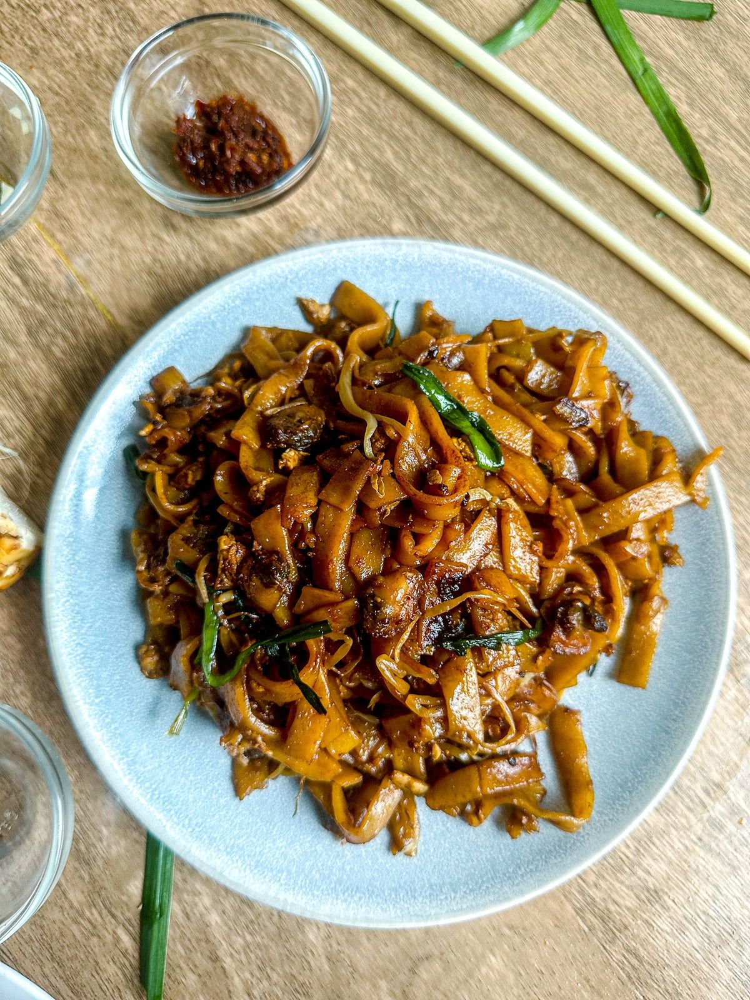
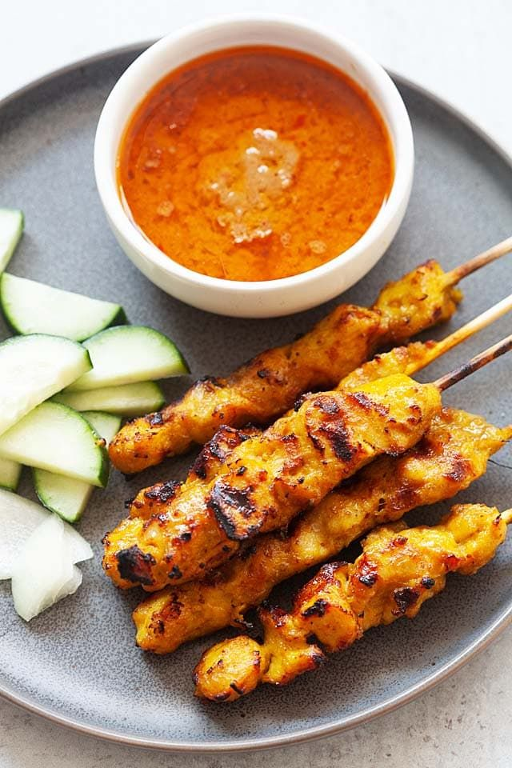
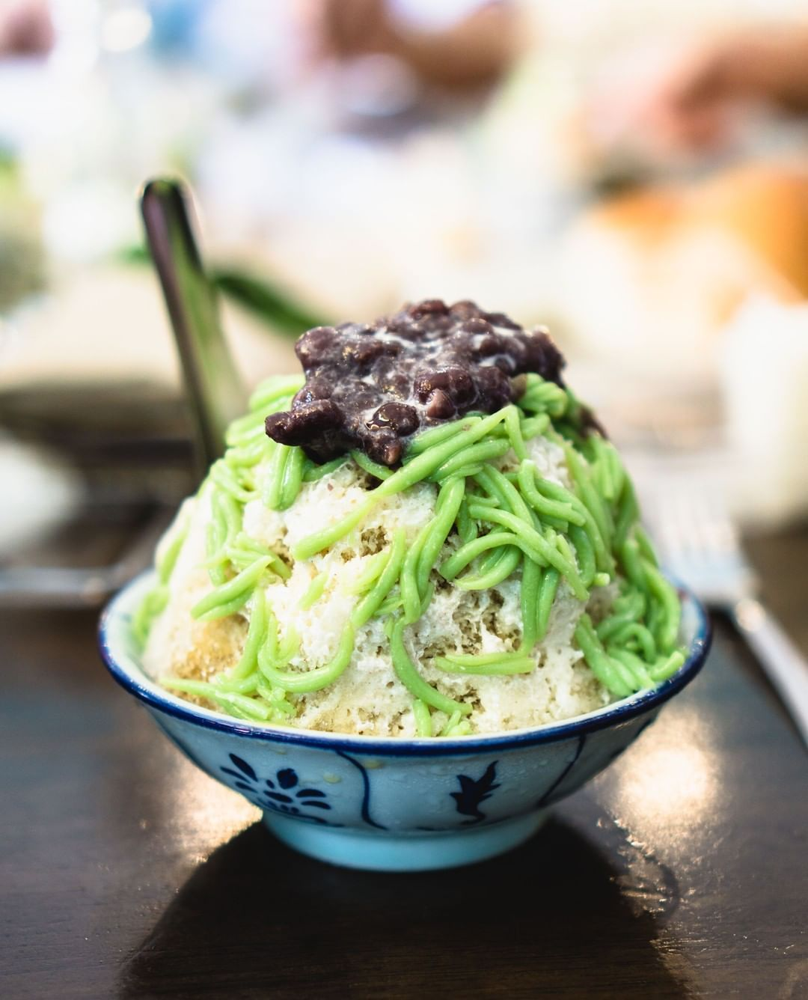
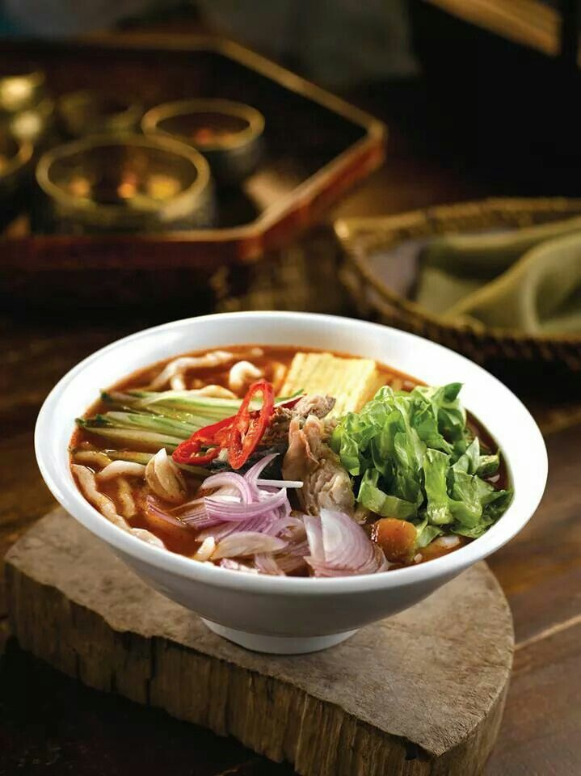
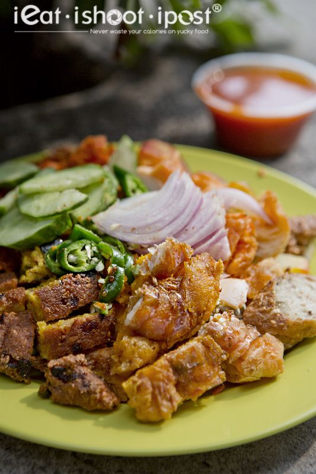
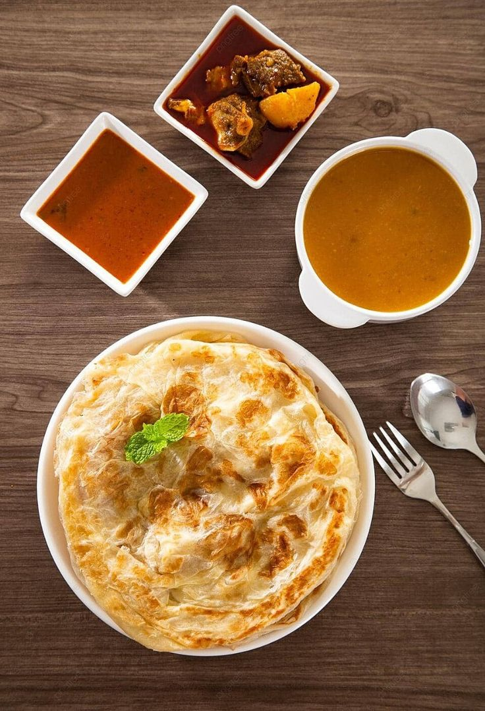
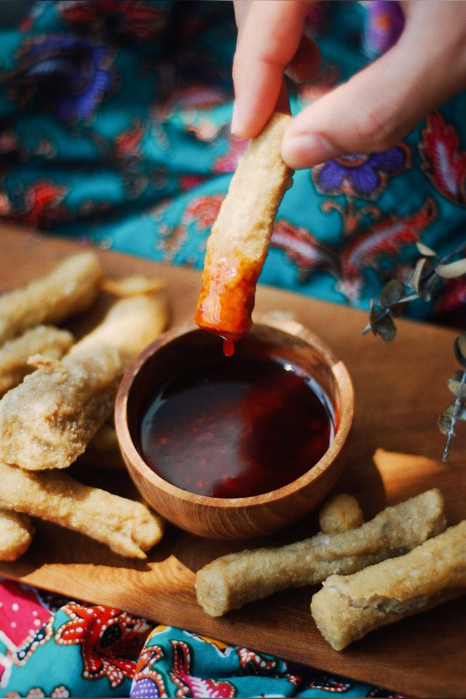
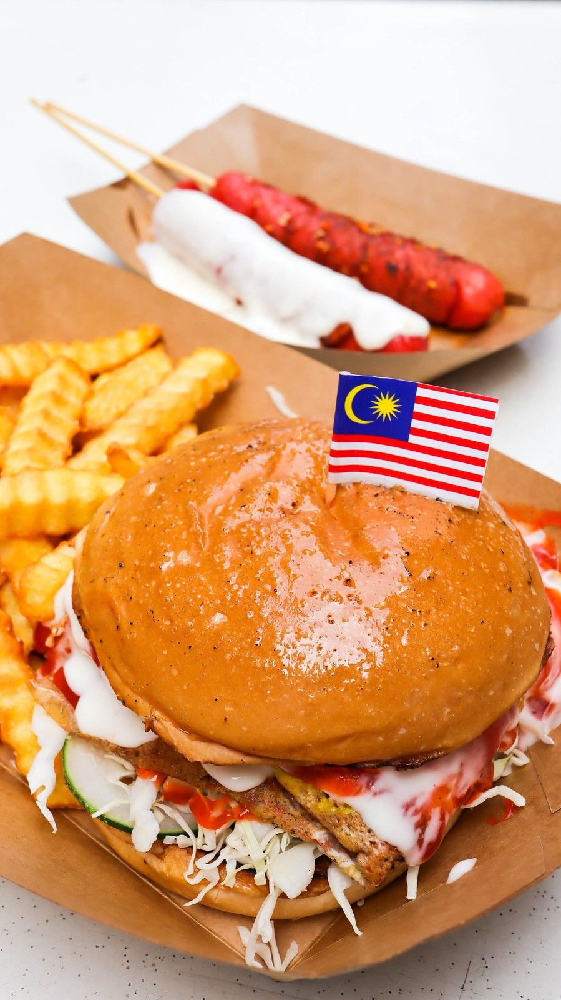

One Of The Best In The World
Nasi Lemak
Char Kway Teow
Satay
Cendol
Laksa
Rojak
Roti Canai
Keropok Lekor
Ramly Burger
murtabak
Malaysian cuisine is a rich blend of flavors shaped by its multicultural society. Influences from Malay, Chinese, Indian, and indigenous traditions make every meal a unique experience.
Street food is the heart of Malaysian dining culture. From the spicy aroma of nasi lemak to the sizzling sound of char kway teow, every dish tells a story of heritage and community. Affordable, vibrant, and served at bustling hawker stalls and night markets, Malaysian food brings people together like no other.
Planning to visit Malaysia? Here is an interactive map for you to check out!